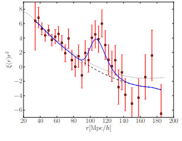
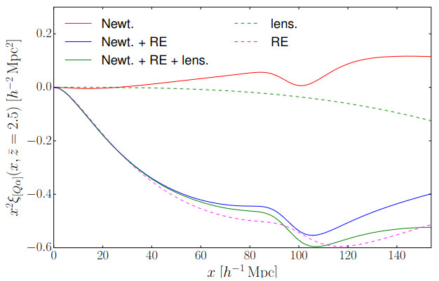
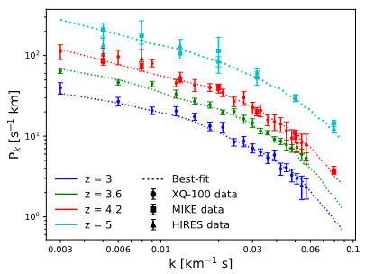
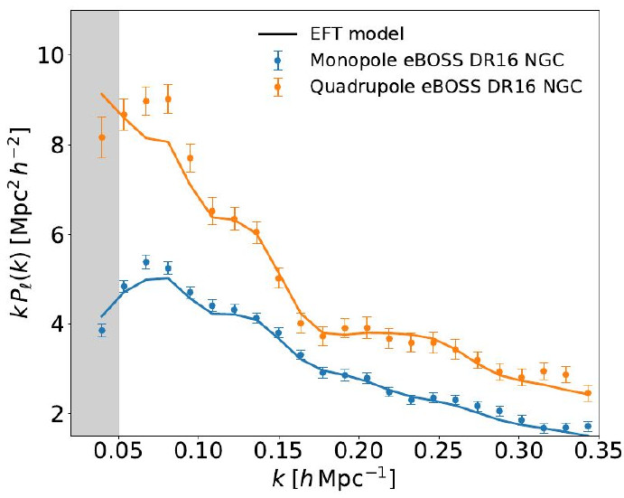

The Lyman-α forest provides a unique measurement of the Baryon Acoustic Oscillations (BAO) at high redshift, acting as a crucial link between the CMB and late-time galaxy surveys. My work in this field began with the first high-redshift detection of the BAO scale using the Lyman-α auto-correlation in SDSS-III/BOSS (Slosar, VI et al. 2013), which demonstrated that the absorption patterns in quasar spectra could be used as a precision standard ruler at z > 2. Since then, I have transitioned into leadership roles within the Dark Energy Spectroscopic Instrument (DESI), serving as the Lyman-α Working Group co-chair (2020-2023). In the DESI DR1 release, I coordinated the analysis of hundreds of thousands of quasar lines-of-sight, leveraging the unprecedented data volume to constrain the expansion history of the Universe (H(z) and dA(z)) with sub-percent accuracy during the epoch of matter-to-radiation transition.

Source: Slosar, VI et al. 2013Beyond the standard Newtonian description of structure formation, the Lyman-α forest cross-correlation with quasars provides a sophisticated laboratory for testing General Relativity on cosmic scales. At high redshifts, the forest and its host quasars exhibit a massive disparity in linear bias—the forest being a tracer of underdense regions while quasars occupy high-mass halos. As explored in Iršič et al. 2015, this difference amplifies relativistic effects such as gravitational redshift, Doppler shifts, and the Integrated Sachs-Wolfe effect, which manifest as an anti-symmetric dipole in the cross-correlation function. By measuring this asymmetry, we can test the Equivalence Principle and the laws of gravity at unprecedented scales. Following this, Lepori, VI et al. 2019 demonstrated that these signatures, while subtle, are within the reach of next-generation surveys. This work paves the way for using DESI and future spectroscopic missions to detect these sub-horizon relativistic corrections, offering a novel method to constrain modified gravity theories and dark energy models that deviate from standard ΛCDM predictions.

Source: Iršič et al. 2015Using the 1D flux power spectrum (P1D), we probe the small-scale structure of the Intergalactic Medium to test fundamental physics. In Ho, VI et al. 2025, we used the PRIYA simulation suite, a massive grid of hydrodynamical simulations designed to provide the precision required for DESI-era cosmology, allowing us to extract robust ΛCDM and neutrino mass constraints from eBOSS and high-resolution surveys like XQ-100. My research also explores current cosmological discrepancies; in Goldstein, VI et al. 2023, we demonstrated that the Lyman-α forest provides some of the most stringent constraints on Early Dark Energy (EDE), significantly limiting the available parameter space for EDE models that attempt to resolve the Hubble tension. Furthermore, work in Esposito, VI et al. 2022 identified a notable tension between the σ8 values preferred by the forest and those from SPT Clusters, suggesting possible unaccounted-for physics in the growth of structure or IGM thermal history.

Source: Esposito, VI et al. 2022While 1D analysis is powerful, the transition to the full 3D Lyman-α power spectrum (P3D) represents the next major evolution in the field. In de Belsunce, VI et al. 2024, we developed new frameworks for measuring 3D clustering, which allows for a cleaner separation between cosmological signals and astrophysical nuisances like the UV background and galactic feedback. This 3D approach is essential for maximizing the scientific return of current missions like DESI and Euclid. Looking further ahead, as outlined in the Wide-field Spectroscopic Telescope (WST) whitepaper (2024), we are preparing for an era of high redshift cosmology. WST will enable unprecedented cross-correlations between the forest and galaxies, effectively mapping the 3D cosmic web in high resolution to study the nature of dark matter and the thermal evolution of the early Universe.
WST Whitepaper
Source: de Belsunce, VI et al. 2024